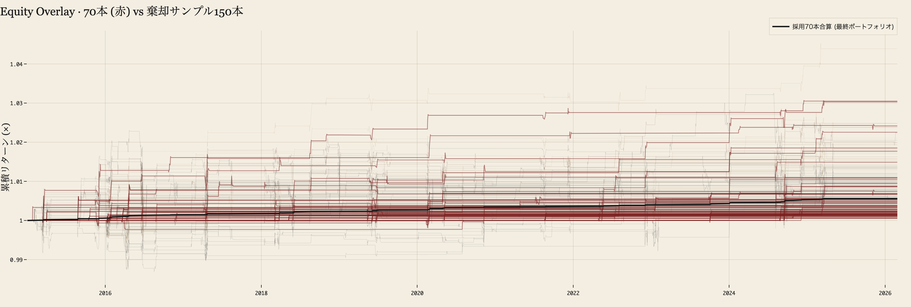
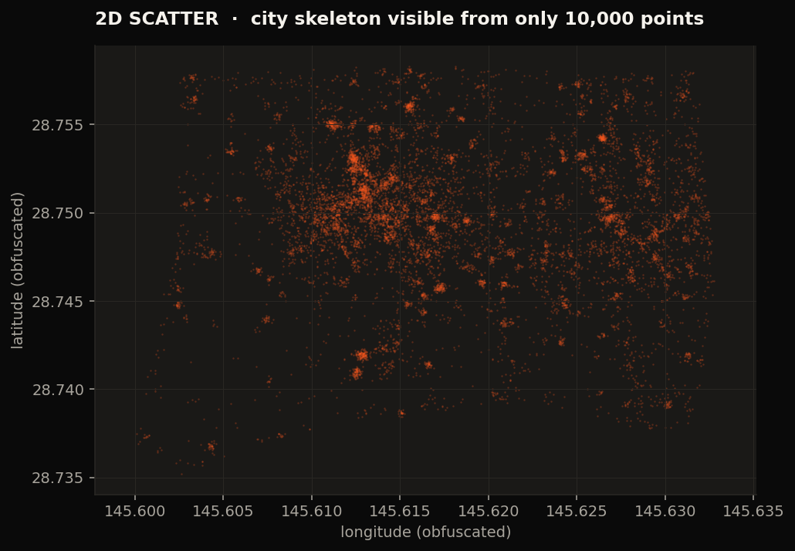

為替コンペ
Strategies3,494
Selected70
Sharpe IS2.05
Sharpe OOS2.11
為替コンペで Sharpe 2.0+、
GPS 軌跡から都市の 3D を立てる。
SOLO で動かした、研究 2 ケースの設計図。


AI は便利だが、研究で全乗っかりするには弱点が多すぎる。
実運用で踏んだ 5 件 の incident を、ログから順に開く。
AI には 奔放に作らせる (Generation)。
それを AI に頼らず数字で叩く (Verification)。
— 検証まで AI に任せると、嘘がループに混じる。
雑 → 詳細 → Skill / Hook で組んだシステム。
質は 階段 で変わる。詳細は当然強いが、システム化すると
そもそも比較対象にならない領域に入る。
テーマを固める → 仮説登録 → 知識マップ → Hook → 並列起動 → 実装 →
ルール照合 → 議論 → 報告 → 知見をマップへ。
各工程はカード化して 水平チェーン に並ぶ — 1 度組めば次のテーマでも再利用できる。
プロンプトを 1 行 投げると、Claude がリーダーとして
分解並列起動実装批判修正検証
を回す。— 寝てる間にこれが動く。
Claude がリーダーで段取りを握り、5 体のエージェント が分業。
為替で組んだループが、人流解析にもそのまま転用できている — 一度作れば再利用できる構造。
AI に取引判断・ポジションサイズ・損切り・緊急停止まで全部任せる。
個人参加者は統計的にほぼ全員が負ける領域 — そもそも個人がやるテーマではなかった。
Microsoft Research の RD-Agent（自律的 R&D エージェント）の発想を踏襲。
仮説立案 → 実装 → バックテスト → 評価 → 知見蓄積 のループを LLM が回す。
ただし丸投げではない — Critic AI と独立統計検証がループの外側から常時監視し、暴走と過学習を止める。
AI はサンクコストで切れない問題を持たない。手作業なら捨てきれない 98% を機械的に棄却。 残った精鋭で運用すると、プロのファンドで「優秀」とされる Sharpe 2.0 超の水準に届いた。
蒸留 (Distillation): 大モデルが書く「なぜその判断か」の思考連鎖を取り出す。
ファインチューニング (Fine-tuning): そのデータで自分の PC のモデルを追加学習。
通常は専門チームが数年かける作業を、自分の PC で数日に圧縮した。
取引判断を 「証拠 ↔ 推論 ↔ 結論」の 3 辺で照合。
整合しなければ信頼度を自動で下げる。 2026/03 の論文をシステムに統合した。
この 3 つは独立した分野ではなく、互いに依存しあう柱。3D 建物復元が「場所の構造」を作り、行動予測が「人の動き」を解く、ベクトル埋め込みが「街区の意味」を測る。
どこか 1 つで詰まると全体が止まる — だから次のスライドで1 つの枠組みに統合する。
入力は 2D の点群と「ここに何かある」という事実だけ。出力は 3D 建物。
高度 (alt_hae) を縦方向に展開 → {4m / 10m / 15m / 25m} で水平にスライス → 各層の点密度から境界を抽出 → 連続層をポリゴンで包む — 5 段階で建物が立ち上がる。
入力は 553 万件の GPS 点と「ここに何かある」という事実だけ。地図も LiDAR も使えない。
匿名 ID + 緯度経度 + 高度の点が地面に散る。これだけで街の形を当てる。
各点の高度 (alt_hae / alt_hat) を縦方向に展開。同じ場所でも上層・下層で違う動き — 建物の階層構造が垂直に現れる。
{ 4m, 10m, 15m, 25m } の帯で水平に切る。各層の点密度から建物の境界を抽出。
連続するスライス間を半透明の壁で繋ぐ。境界の不確実性は透明度で表現。
壁を不透明にし、屋根を被せ、最終形状を確定。地図なし・LiDAR なしから街の 3D 構造が復元できる。
人 = 電流。住宅 = 夜間に充電し、昼間に放電する battery。オフィスビル = 一時的に滞留させる capacitor。道路・改札 = resistor。商業施設 = load (消費)。
この見立てで Kirchhoff の法則 (Σ I = 0) を立てれば、3 テーマがひとつの保存則に収まる。
フォーマット・座標系・更新頻度がバラバラな 7 系統を統合する作業 — 通常は研究室でも避けて通る前処理地獄。
AI が parser / normalizer / 名寄せ / 検証まで書く。人間が決めるのは「何と何を結合するか」だけ。
ローカルは設計と判断、リモートは実行と監視。AI が両側を行き来することで「自分のマシンの能力」が消える。
Hyp-SGNS の hyperparameter sweep 数百試行を 8×H100 に並列投入 → 結果を AI が回収して次の手を提案。
ArXiv / Google Scholar から関連論文を収集 → AI が 要約・引用関係・分類タグを吐き出す → 4 系統にクラスタリング。
「自分のアイデアと近い場所」と「誰も埋めていない隙間」が地図として見える。研究室の数ヶ月仕事を 1 日に圧縮。
従来 = 詰まったら人間が論文を読み、別アプローチを考案し、実装し直す (数ヶ月)。
AI 使い方 = 壁の検知 → 文献調査 → 構想提案 → prototype 実装 → 検証を 4 段でループ。人間は方向性を承認するだけ。
従来の研究室 = PI + ポスドク + 学生 + ラボマネージャ + RA + 計算機資源 + 図書館。
個人 + AI = それぞれの役割を AI エージェント / SSH GPU / 文献検索に置き換える。
人間がやるのは 問いを立てる・節目で判断する・軌道修正する — つまり 手綱を握ること。手放しじゃない。